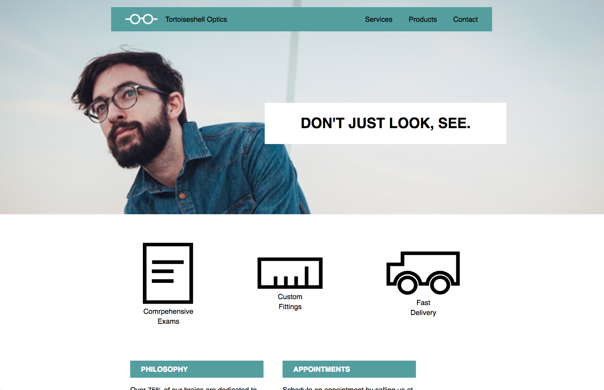
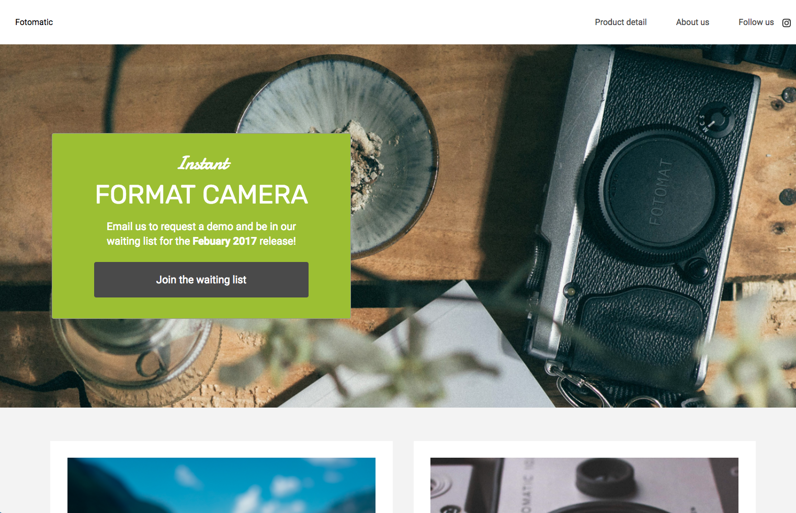
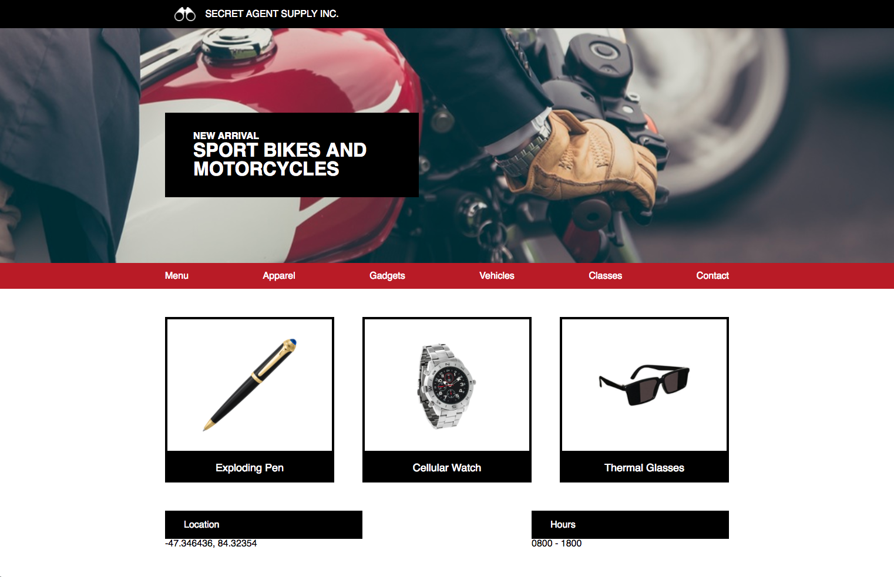
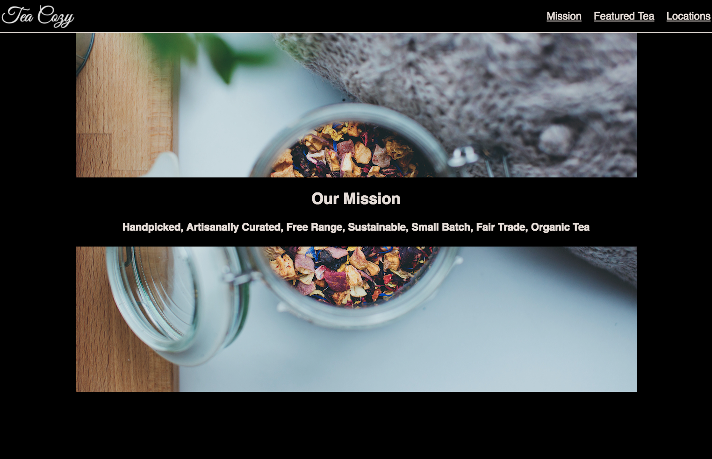

creating modern and responsive design for Web and Mobile
About me
Travis began his audio career over 5 years ago while a student at Lee University and Berklee College of Music Online. With a solid focus on audio production and recording throughout school Travis was able to build the solid foundation his audio work rests upon today.
Soon after college, Travis began working both in live audio production and film. He has worked on a variety of projects ranging from documentaries to professional commercial productions.
In the beginning of 2017, Travis began working full-time as a Post-production Audio Engineer at Elevation Church in Charlotte, NC. Since then he has been a part of numerous video productions at Elevation Church and in his freelance work.
Musician
I've been playing guitar ever since I can remember and also enjoy making electronic music in my free time.
Check out my music.
Traveler
Whether it's doing mission work overseas or exploring a new destination I feel travel is essential to a fullfiled life.
Videographer
Whether it's doing mission work overseas or exploring a new destination I feel travel is essential to a fullfiled life.
Diver
One of my biggest passions is exploring what lies beneath the waves.
My work
Here are a few of my projects.

Tortoiseshell
Responsive site built from scratch with HTML and CSS.
Skills used include: Semantic HTML, Flexbox, Media Queries, and GitHub.

Fotomatic
Broken site that was fixed with HTML and CSS. Tools used include: Chrome DevTools and prolbem solving.

Secret Agent
Responsive site built from scratch with HTML and CSS. Skills used include: Media Queries, GitHub, HTML, and CSS.

Some work one
Image
Tortoiseshell
Responsive site built from scratch with HTML and CSS.
Skills used include: Semantic HTML, Flexbox, Media Queries, and GitHub.
Tortoiseshell
Responsive site built from scratch with HTML and CSS.
Skills used include: Semantic HTML, Flexbox, Media Queries, and GitHub.
LET'S CHAT!
I'm currently based in North Carolina, available for full-time work, and willing to relocate.